Học máy
Bài 4b: Lựa chọn mô hình
Trường ĐH Công nghệ – Đại học Quốc gia Hà Nội
Nội dung
Giới thiệu
\[ Y = \beta_0 + \beta_1 X_1 + \cdots + \beta_p X_p + \varepsilon \]
- Tăng linh hoạt: thêm thành phần phi tuyến hoặc hàm cơ sở
- Giảm linh hoạt — bài học này:
- Lựa chọn tập con: chỉ dùng tập con biến
- Co rút: phạt hệ số lớn hoặc khác 0
- Giảm chiều: chiếu vào không gian chiều thấp
Tại sao cần mô hình đơn giản hơn?
OLS không phải lúc nào cũng cho dự đoán tốt nhất.
\[ E(\hat{f}(x_0) - f(x_0))^2 = \mathrm{Var}(\hat{f}(x_0)) + \left[\mathrm{Bias}(\hat{f}(x_0))\right]^2 + \mathrm{Var}(\varepsilon) \]
- Giảm bớt biến có thể giảm phương sai.
- Khi \(p > n\), OLS không còn nghiệm duy nhất.
- Mô hình đơn giản hơn dễ diễn giải.
1.
Lựa chọn tập con
Lựa chọn tập con tốt nhất
- Xét tất cả \(2^p\) tập con biến.
- Với mỗi kích thước mô hình, chọn tập con tốt nhất.
- Sau đó chọn mô hình cuối cùng theo sai số tổng quát hoá.
- Số mô hình tăng rất nhanh theo \(2^p\), nên chỉ phù hợp khi \(p\) nhỏ.
Ước tính sai số tổng quát hoá:
- Kiểm định chéo (CV)
- Tiêu chí hiệu chỉnh từ sai số huấn luyện: \(C_p\), AIC, BIC, adjusted \(R^2\)
Ví dụ: Lựa chọn tập con tốt nhất
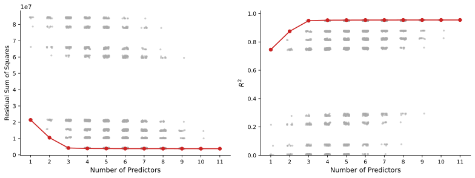
RSS trên tập huấn luyện Lựa chọn tập con tốt nhất — dữ liệu Credit
\(R^2\) trên tập huấn luyện
Lựa chọn bước tiến
- Bắt đầu từ \(\mathcal{M}_0\) (chỉ có hệ số chặn).
- Ở mỗi bước, thêm biến làm mô hình cải thiện nhiều nhất.
- Thu được dãy mô hình \(\mathcal{M}_0,\ldots,\mathcal{M}_p\).
- Chọn mô hình cuối cùng theo sai số tổng quát hoá.
- Cần xét \(p(p+1)/2\) mô hình.
- Cùng kích thước: dùng RSS hoặc \(R^2\).
- Khác kích thước: dùng sai số tổng quát hoá.
Lựa chọn bước lùi
- Bắt đầu từ \(\mathcal{M}_p\) (mô hình đầy đủ).
- Ở mỗi bước, loại biến đóng góp ít nhất.
- Thu được dãy mô hình từ lớn đến nhỏ.
- Chọn mô hình cuối cùng theo sai số tổng quát hoá.
- Cũng là một phương pháp tham lam.
- Không đảm bảo tối ưu toàn cục.
- Cần ước lượng được mô hình đầy đủ ngay từ đầu.
Biến thể hỗn hợp: kết hợp thêm và loại biến.
2.
Chọn mô hình
tối ưu
Từ mô hình ứng viên đến mô hình cuối cùng
- Phần 1 tạo ra nhiều mô hình ứng viên.
- Phần 2 chọn mô hình cuối cùng.
- Tiêu chí chọn: mô hình nào tổng quát hoá tốt nhất?
1. Tập kiểm định
- Chia dữ liệu thành tập huấn luyện và tập kiểm định.
- Khớp nhiều mô hình ứng viên trên tập huấn luyện.
- Chọn mô hình có sai số kiểm định nhỏ nhất.
- Ví dụ: 3/4 huấn luyện, 1/4 kiểm định.
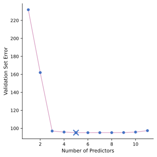
2. Kiểm định chéo
- Ví dụ: 10-fold CV.
- Nhiều mô hình có lỗi gần như nhau.
- Không nên chọn máy móc đúng điểm cực tiểu.
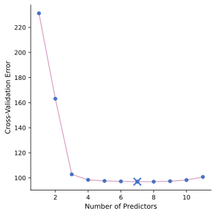
2. Kiểm định chéo
- Ví dụ: 10-fold CV.
- Nhiều mô hình có lỗi gần như nhau.
- Không nên chọn máy móc đúng điểm cực tiểu.

Ứng dụng quy tắc 1-SE (ESL tr. 62)
3. adjusted \(R^2\)
\[ \text{Adjusted } R^2 = 1 - \frac{RSS/(n-d-1)}{TSS/(n-1)} \]
- \(R^2\) thường tăng đơn điệu → cần hiệu chỉnh
- Tối đa adj. \(R^2\) ⟺ tối thiểu \(RSS/(n-d-1)\)
- Biến nhiễu giảm RSS nhưng không giảm \(RSS/(n-d-1)\)
- Nền tảng lý thuyết yếu
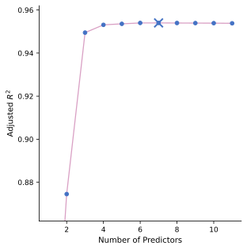
adjusted \(R^2\) – dữ liệu Credit
Tốt
nhất: income, limit, rating, cards, age, student, gender
4. Thống kê \(C_p\)
\[ C_p = \frac{1}{n}(RSS + 2d\hat{\sigma}^2) \]
- Phạt tăng theo \(d\) (số biến) và \(\hat{\sigma}^2\)
- Ước lượng sai số trong mẫu
- \(C_p\) không thiên chệch khi \(\hat{\sigma}^2\) không thiên chệch
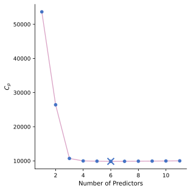
\(C_p\) – dữ liệu Credit
Tốt
nhất: income, limit, rating, cards, age, student
5. Tiêu chí AIC
Dạng gốc của AIC:
\[ AIC = -2\log\ell + 2k \]
- \(\ell\): log-likelihood, đo độ khớp của mô hình với dữ liệu.
- \(k\): số tham số của mô hình.
- AIC cân bằng giữa độ khớp và độ phức tạp.
Trong hồi quy tuyến tính:
\[ AIC \propto RSS + 2d\hat{\sigma}^2 \]
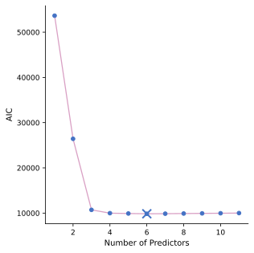
AIC – dữ liệu Credit
Tốt
nhất: income, limit, rating, cards, age, student
OLS Gauss ≡ hợp lý cực đại?
- Mô hình bình phương tối thiểu với sai số Gauss cộng: \[ Y = f_{\theta}(X) + \varepsilon, \quad \varepsilon \sim \mathcal{N}(0, \sigma^2) \]
- Hợp lý cực đại: \[ \Pr(Y | X, \theta) \sim \mathcal{N}(f_\theta(X), \sigma^2) \] \[ \mathcal{N}(f_\theta(X), \sigma^2) = \frac{1}{\sigma\sqrt{2\pi}} \exp\!\left(-\frac{(Y - f_\theta(X))^2}{2\sigma^2}\right) \]
- Log-likelihood: \[ \ell(\theta) = -\frac{n}{2}\log(2\pi) - n\log\sigma - \frac{1}{2\sigma^2}\underbrace{\sum_{i=1}^{n}(y_i - f_\theta(x_i))^2}_{\text{tỉ lệ với RSS}} \]
→ Tối đa hóa \(\ell(\theta)\) tương đương tối thiểu hóa RSS.
6. Tiêu chí BIC
\[ BIC = \frac{1}{n}(RSS + \log(n)\cdot d\hat{\sigma}^2) \]
- So với AIC, hệ số phạt là \(\log n\) thay vì \(2\).
- Khi \(n > 7\), \(\log n > 2\), nên BIC phạt mạnh hơn AIC.
- Vì vậy, BIC thường chọn mô hình nhỏ hơn AIC.
- Phù hợp khi ưu tiên mô hình gọn và dễ diễn giải.
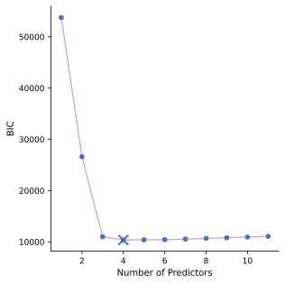
BIC – dữ liệu Credit
Tốt
nhất: income, limit, cards, student
So sánh các tiêu chí chọn mô hình
| Tiêu chí | Cơ sở | Ưu điểm | Hạn chế |
|---|---|---|---|
| Tập kiểm định / CV | Lấy mẫu lại | Không giả thiết; linh hoạt | Tốn tính toán; phụ thuộc phân chia ngẫu nhiên |
| adjusted \(R^2\) | Hiệu chỉnh thống kê | Đơn giản, trực quan | Nền tảng lý thuyết yếu; không dùng khi \(p \ge n\) |
| \(C_p\) / AIC | Hiệu chỉnh từ sai số huấn luyện | Nhanh; tương đương với mô hình OLS | Cần ước lượng tốt \(\hat{\sigma}^2\); không dùng khi \(p \ge n\) |
| BIC | Xác suất Bayes | Phạt mạnh hơn AIC; nhất quán | Xu hướng chọn mô hình nhỏ hơn thực tế; không dùng khi \(p \ge n\) |
Khuyến nghị: ưu tiên CV khi có đủ tài nguyên tính toán; ưu tiên BIC khi cần mô hình gọn và dễ diễn giải.
3.
Phương pháp
co rút hệ số
Giới thiệu co rút hệ số
- Lựa chọn tập con: giữ hoặc bỏ hẳn biến.
- Co rút hệ số: giữ biến nhưng kéo hệ số nhỏ lại.
- Mục tiêu: giảm phương sai và cải thiện dự đoán.
- Hai phương pháp chính: Ridge và Lasso.
- Tham số điều chỉnh \(\lambda\) thường được chọn bằng CV.
Hồi quy Ridge
\[ \min_{\beta} \; RSS + {\color{#c0392b}{\lambda\sum_{j=1}^{p}\beta_j^2}} \]
- \(\lambda\) điều khiển mức phạt theo chuẩn L2.
- \(\lambda\) càng lớn, các hệ số càng bị co nhỏ về 0.
- Không phạt hệ số chặn \(\beta_0\).
- \(\lambda = 0\): quay về OLS; \(\lambda \to \infty\): chỉ còn hằng số.
- Chọn \(\lambda\) bằng CV.
Hồi quy Ridge
Ứng dụng trên dữ liệu Credit
- \(\lambda\) tăng → mọi hệ số dần về 0.
- Ridge thường giữ lại tất cả biến.
- Một số hệ số có thể tăng nhẹ trước khi giảm.
Chuẩn hóa đầu vào:
- Ridge phạt trực tiếp lên độ lớn của hệ số.
- Vì vậy, cần chuẩn hóa các biến đầu vào về cùng thang đo.
\[ \tilde{x}_{ij} = \frac{x_{ij}}{\sqrt{\frac{1}{n}\sum_{i=1}^{n}(x_{ij}-\bar{x}_j)^2}} \]
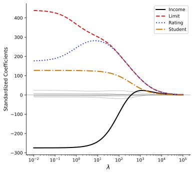
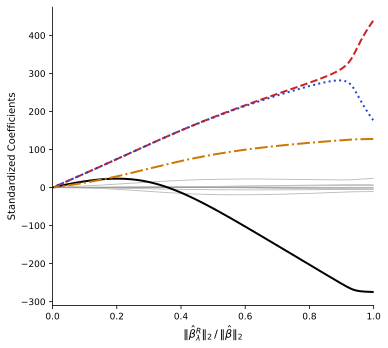
Ước lượng Ridge qua SVD
- Nếu đầu vào trực chuẩn: ước lượng Ridge là phiên bản co rút của bình phương tối thiểu: \(\hat{\beta}^R = \hat{\beta}/(1+\lambda)\)
- Bậc tự do hiệu dụng (effective degrees of freedom): \[ \text{df}(\lambda) = \text{tr}\!\left[\mathbf{X}(\mathbf{X}^T\mathbf{X}+\lambda\mathbf{I})^{-1}\mathbf{X}^T\right] \] — bằng \(p\) khi \(\lambda=0\), tiến về 0 khi \(\lambda\to\infty\)
- Phân tích giá trị suy biến (SVD) của \(\mathbf{X} = \mathbf{U}\mathbf{D}\mathbf{V}^T\):
- \(\mathbf{U}\): ma trận \(n\times p\) trực giao; \(\mathbf{D}\): ma trận \(p\times p\) đường chéo; \(\mathbf{V}\): ma trận \(p\times p\) trực giao
- Các giá trị suy biến \(d_1 \ge d_2 \ge \cdots \ge d_p \ge 0\)
- Nghiệm Ridge: \(\mathbf{X}\hat{\beta}^{\text{ridge}} = \sum_{j=1}^{p} \mathbf{u}_j \frac{d_j^2}{d_j^2+\lambda} \mathbf{u}_j^T \mathbf{y}\)
- Bậc tự do hiệu dụng: \(\text{df}(\lambda) = \sum_{j=1}^{p} \frac{d_j^2}{d_j^2+\lambda}\)
Tại sao Ridge cải thiện OLS?
Mô phỏng: \(p=45, n=50\), tất cả biến đều liên quan đến đầu ra.
- Chấp nhận một ít độ chệch để giảm phương sai.
- Khi các biến tương quan mạnh hoặc \(p\) lớn, Ridge vẫn ổn định hơn OLS.
- Thực dụng hơn lựa chọn tập con khi số biến nhiều.

Lasso
Vấn đề của Ridge: co hệ số nhưng hiếm khi đưa hệ số về đúng 0.
\[ \min_{\beta} \; RSS + {\color{#c0392b}{\lambda\sum_{j=1}^{p}|\beta_j|}} \]
- Phạt bằng chuẩn L1 thay vì L2.
- Nhiều hệ số có thể bằng đúng 0.
- Vì vậy, Lasso vừa co rút vừa chọn biến.
- Thường dùng khi muốn mô hình gọn và dễ diễn giải.
Trực giác: Ridge vs. Lasso
Ridge: \(\min RSS\) sao cho \(\sum\beta_j^2 \le s\)
- Miền ràng buộc là hình cầu, nên nghiệm thường chỉ bị co nhỏ chứ ít khi bằng 0.
Lasso: \(\min RSS\) sao cho \(\sum|\beta_j| \le s\)
- Miền ràng buộc là hình thoi, có góc nhọn trên các trục nên nghiệm dễ cho hệ số bằng 0.
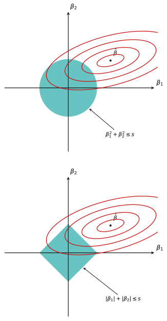
Ví dụ: Ridge vs. Lasso - Credit
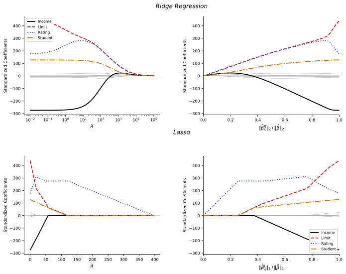
Ridge vs. Lasso
Trường hợp đơn giản
\(n=p\), \(\mathbf{X}=\mathbf{I}\), \(\beta_0=0\)
- OLS: \(\hat{\beta}_j=y_j\)
- Ridge: \(\hat{\beta}_j^R = y_j/(1+\lambda)\) → co đều mọi hệ số.
- Lasso: nghiệm có ngưỡng mềm:
\[ \hat{\beta}_j^L = \begin{cases} y_j - \lambda/2 & \text{nếu } y_j > \lambda/2 \\ y_j + \lambda/2 & \text{nếu } y_j < -\lambda/2 \\ 0 & \text{nếu } |y_j| \le \lambda/2 \end{cases} \]
- Hệ số nhỏ có thể bị kéo về đúng 0.
- Vì vậy, Ridge co rút; Lasso vừa co rút vừa chọn biến.
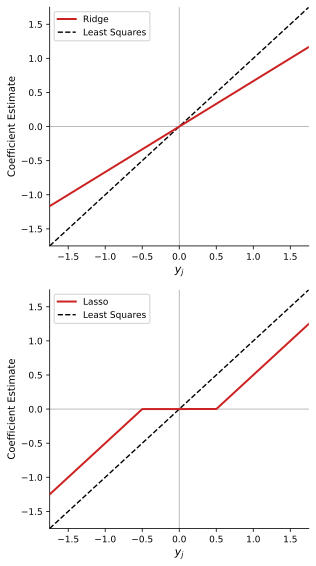
Ridge vs. Lasso
Mô phỏng thưa
\(p=45, n=50\), chỉ 2 biến thật sự liên quan.
- Lasso cho sai số dự đoán thấp hơn.
- Lasso loại được các biến không liên quan.

Ridge vs. Lasso
Mô phỏng dày
\(p=45, n=50\), tất cả biến đều liên quan.
- Ridge cho sai số dự đoán thấp hơn một chút.
- Lasso có thể đặt nhầm một số hệ số về 0.
Tóm lại:
- Mô hình thưa → ưu tiên Lasso.
- Mô hình dày → ưu tiên Ridge.
- Thực tế, \(\lambda\) được chọn bằng CV.

Chọn tham số điều chỉnh
- Chọn một lưới giá trị \(\lambda\).
- Tính lỗi CV cho từng giá trị.
- Chọn \(\lambda^*\) theo cực tiểu CV hoặc quy tắc 1-SE.
- Huấn luyện lại mô hình trên toàn bộ dữ liệu.
⚠️ Không dùng dữ liệu huấn luyện để báo cáo sai số cuối cùng.
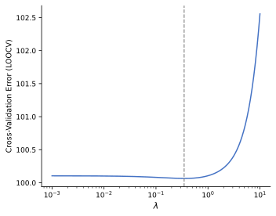
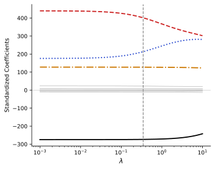
Thực hành: Ridge vs. Lasso
from sklearn.linear_model import RidgeCV, LassoCV
from sklearn.model_selection import KFold
from sklearn.pipeline import make_pipeline
from sklearn.preprocessing import StandardScaler
cv = KFold(n_splits=10, shuffle=True, random_state=42)
# Bước 1: Chuẩn hóa phải nằm bên trong CV để tránh rò rỉ dữ liệu
ridge = make_pipeline(
StandardScaler(),
RidgeCV(alphas=[0.01, 0.1, 1, 10, 100], cv=cv),
)
ridge.fit(X_train, y_train)
print(f"Ridge: lambda tối ưu = {ridge.named_steps['ridgecv'].alpha_:.3f}")
# Bước 2: Lasso — tương tự
lasso = make_pipeline(
StandardScaler(),
LassoCV(alphas=[0.001, 0.01, 0.1, 1], cv=cv, max_iter=10000),
)
lasso.fit(X_train, y_train)
print(f"Lasso: lambda tối ưu = {lasso.named_steps['lassocv'].alpha_:.3f}")
print(f"Lasso: số hệ số khác 0 = {(lasso.named_steps['lassocv'].coef_ != 0).sum()}")⚠️ alpha trong sklearn tương ứng với \(\lambda\) trong công thức. Tham số alphas là lưới các giá trị để CV tìm kiếm.
Chọn tham số điều chỉnh
Lasso trên dữ liệu thưa
2/45 đặc trưng liên quan đến đầu ra
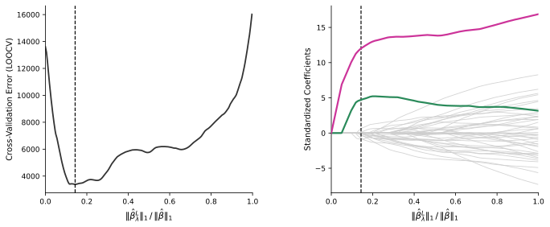
4.
Dữ liệu
nhiều chiều
Bối cảnh dữ liệu nhiều chiều
- Truyền thống: \(p\) nhỏ, \(n\) lớn
- Hiện nay: \(p \gg n\) phổ biến
- 500,000 biến thể gene (SNPs) dự đoán huyết áp (\(n \approx 200\) người)
- Từ khóa tìm kiếm → marketing
- Dữ liệu nhiều chiều: \(p \ge n\)
- Cũng áp dụng khi \(p\) chỉ nhỏ hơn \(n\) một chút
Vấn đề trong không gian nhiều chiều
- OLS có thể khớp hoàn hảo — nhưng quá khớp nghiêm trọng
- \(p \ge n\): luôn tồn tại siêu phẳng qua mọi điểm
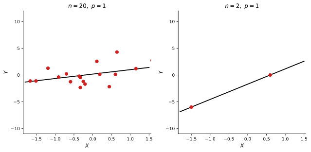
Ví dụ: Hồi quy nhiều chiều
Thiết lập: OLS, \(n=20\), thêm dần 1–20 đặc trưng không liên quan đến đầu ra.
- Trên tập huấn luyện: \(R^2\) tăng dần tới 1, sai số giảm dần tới 0.
- Trên dữ liệu mới: mô hình đơn giản nhất lại cho sai số nhỏ nhất.
- Bài học: lỗi huấn luyện không còn phản ánh khả năng tổng quát hoá.
- \(C_p\), AIC, BIC, adjusted \(R^2\) cũng có thể gây hiểu nhầm.
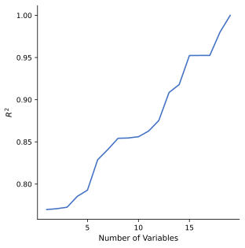
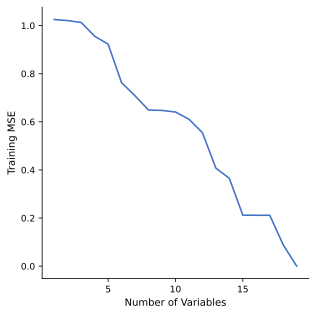
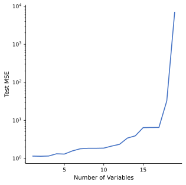
Hồi quy nhiều chiều — Phương pháp
Mô phỏng: dùng Lasso với \(n=100\), \(p \in \{20,50,2000\}\).
Trong cả ba trường hợp, chỉ có 20 biến thật sự liên quan.
- Khi \(p\) tăng, sai số trên dữ liệu mới tăng.
- Nhiều biến vô ích làm việc chọn mô hình khó hơn.
- Chính quy hóa không loại bỏ hoàn toàn lời nguyền chiều.

Trục tung: sai số trên dữ liệu mới; càng thấp càng tốt.
Giải thích kết quả nhiều chiều
- Nhiều biến gần như mang cùng một thông tin.
- Vì vậy, mô hình khó xác định biến nào thật sự quan trọng.
- Một tập biến được chọn không nhất thiết tốt hơn nhiều tập biến khác.
Ví dụ: 500,000 SNPs dùng để dự đoán huyết áp.
- Bước tiến có thể chọn ra 17 SNPs, nhưng một tập 17 SNPs khác cũng có thể cho kết quả tương tự.
- Kết quả có thể thay đổi đáng kể giữa các tập dữ liệu.
- → Mô hình có thể dự đoán được, nhưng khó diễn giải.
Báo cáo sai số nhiều chiều
Tránh:
- Sai số huấn luyện
- AIC, BIC, adjusted \(R^2\)
- p-value tính trên dữ liệu huấn luyện
Nên dùng:
- Tập kiểm tra độc lập
- Kiểm định chéo
Tổng kết
| Phương pháp | Mô hình thưa? | Dễ diễn giải? | Hoạt động khi \(p \ge n\)? | Lưu ý |
|---|---|---|---|---|
| Lựa chọn tập con tốt nhất | ✓ | ✓ | ✗ | Chỉ phù hợp khi \(p\) nhỏ |
| Lựa chọn bước tiến / bước lùi | ✓ | ✓ | Bước tiến: ✓ Bước lùi: cần mô hình đầy đủ |
Tham lam — không đảm bảo tối ưu toàn cục |
| Ridge (L2) | ✗ | ✗ | ✓ | Tốt khi nhiều biến đều có đóng góp nhỏ |
| Lasso (L1) | ✓ | ✓ | ✓ | Tốt khi chỉ vài biến thực sự liên quan |
Trong thực tế: dùng kiểm định chéo để chọn giữa các phương pháp và chọn \(\lambda\).
Tài liệu tham khảo
- James, G., Witten, D., Hastie, T., Tibshirani, R. An Introduction to Statistical Learning (ISLR), 2nd ed., Springer, 2021.
- Hastie, T., Tibshirani, R., Friedman, J. The Elements of Statistical Learning (ESL), 2nd ed., Springer, 2009.
- Muandet, K. & Vreeken, J., Lecture slides, Saarland University.